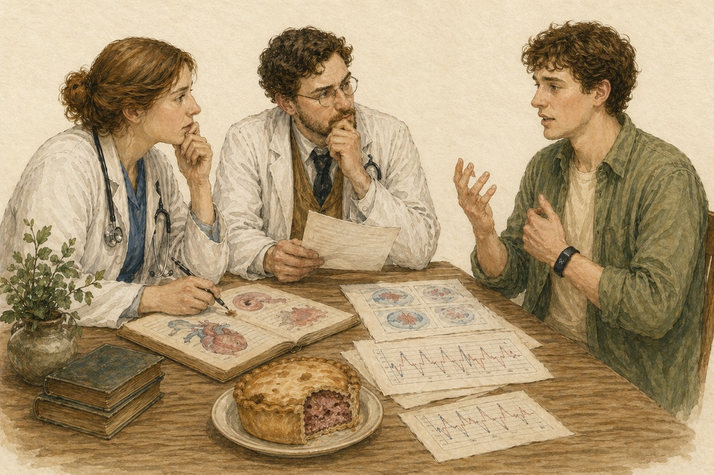
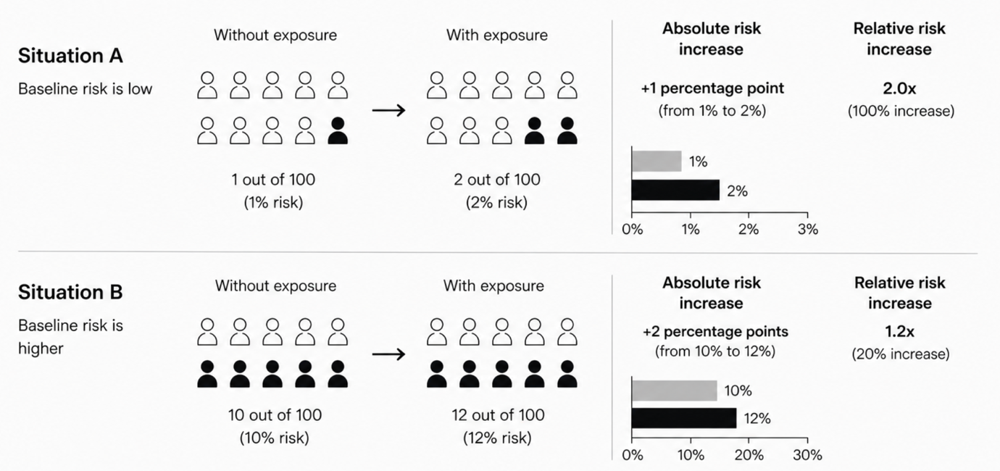
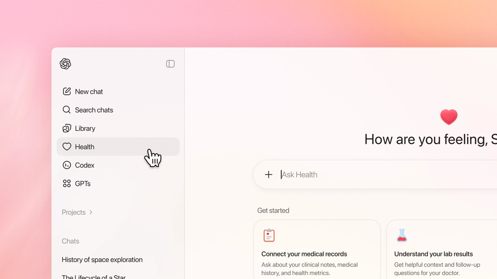
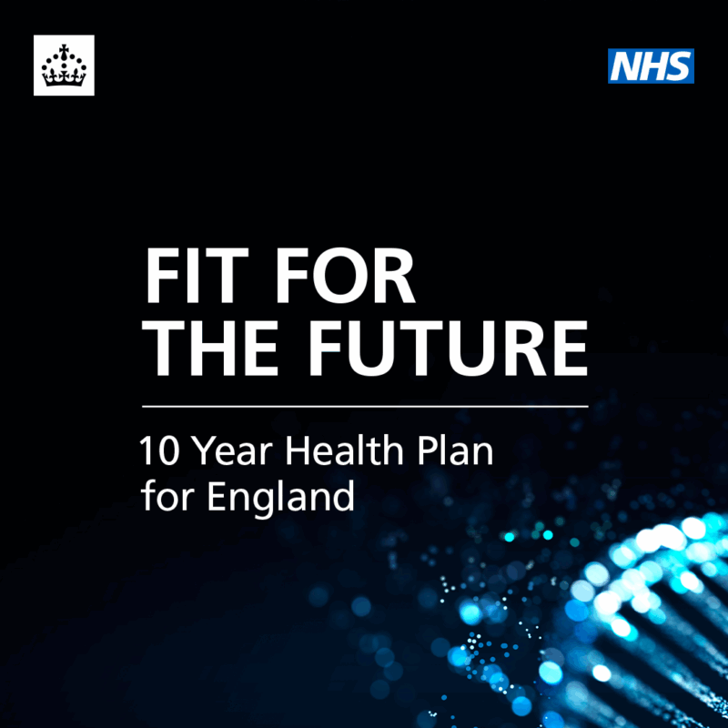
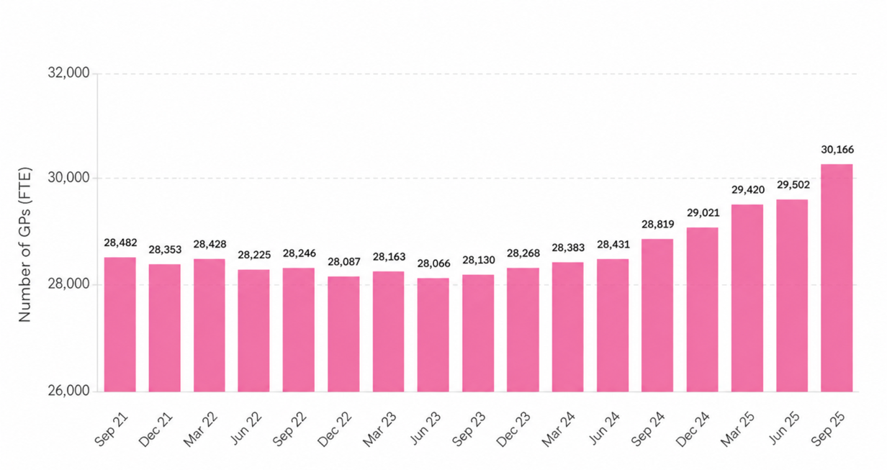

How to Treat a Pork Pie: A Doctor's Guide
2026-03-03

“I am a proud Lincolnshire pork pie.”
If I told my GP this today, I imagine they would respond with a polite but measured dose of scepticism. They would probe how I came to such an absurd conclusion about my state of being and, crucially, avoid writing “is a Melton Mowbray pie” into my medical notes.
Medicine is used to interpreting the symptoms patients present with. It is, however, less used to interpreting what patients know or think they know about their own biology.
Yet this is increasingly the case in primary care. Through wearable devices, direct-to-consumer (D2C) genetic testing, and large language models (LLMs), we have made it easier than ever for patients to access and explore personal medical data. As a result, patients now arrive in primary care not just with symptoms, but with reams of data and pre-formed narratives about their health, despite most of the population possessing no formal education in science beyond GCSEs.
Some of these naratives emerge from genuinely fascinating science. For example, my opening scence in the doctor's office originated from research conducted in survivors of the Dutch Hunger Winter – a period when calorie intake in parts of the Netherlands fell to as low as 400 calories per day. Decades later, researchers found that epigenetic changes caused by that famine were still detectable – not only in those who lived through it, but in their children and even their grandchildren.
This was the first study to demonstrate that the environments and diets experienced by one generation can shape the biological risks inherited by future ones. I like to joke that some parts of my biology are shaped in ways I don't fully understand by pork pies; my grandfather's favourite food. While this clearly doesn't make me a pork pie, it's precisely this kind of nuanced scientific concept – valuable yet easily misinterpreted – that the modern patient is expected to make sense of as they're encourgaed to better understand their unique health risks.
Last year, the Labour Government released its 10 Year Health Plan for the NHS, outlining their vision for UK public healthcare in 2035 – a distributed system equipped to stratify patients and detect disease early, preventing it where possible before people reach hospital beds. Integrating digital health tools, wearable devices, and genetic testing into primary care is not just part of that plan – it's effectively the whole plan.
So, as the NHS undergoes a much-needed restructuring, aiming to incorporate many new advances in the health tech field, UK medicine is being asked to do something new – not just diagnose and treat disease, but rapidly interpret and communicate complex, patient-generated data to those same patients. I wanted to explore the realities of a system under stress that increasingly expects patients to arrive in primary care armed with genomic data, wearable metrics, and AI-generated interpretations of their biology.
The Rise of Patient-Generated Health Data
Interrogating and monitoring the health of ourselves and our loved ones in the absence of a doctor is not a new phenomenon. We have used tools for this purpose long before the Human Genome Project or modern wearables. During the 18th century, in a period when balancing bodily fluids was still considered good medical practice, literate families relied on home health manuals for care, as access to a doctor was slow and often complicated by travel (some things, it seems, have not changed).
The tools of today, however, are clearly distinct in their nature. We have made huge leaps in both the depth and breadth of our understanding of biology, leading to an explosion of consumer-oriented health products over the past two decades. Genetic testing services such as 23andMe, 24/7 wearable devices like Apple Watches and WHOOP, regular blood biomarker analyses, and even longitudinal full-body MRI scans are now accessible to individuals outside traditional clinical settings.
These technologies are already shaping our behaviours. Many users report changing their attitudes towards sleep, exercise, or alcohol consumption after seeing the physiological effects reflected in wearable metrics. Yet the central challenge posed by this new wave of health technology is not simply generating health information, but interpreting it correctly.
I experienced this uncertainty firsthand during my own sports career. My Garmin would regularly record a maximum heart rate of 220 bpm – well above what would typically be expected. In isolation, that number appeared deeply concerning and for a period of time, both myself and my coaches worried that it reflected an underlying heart problem that could affect my ability to compete.
Yet the number itself was never a diagnosis. Only after long-term monitoring, cardiac ultrasound imaging, and clinical assessment was I reassured that this represented normal physiological variation rather than pathology. This experience sums up the reality of modern health technology: data arrives first, interpretation later.
In some technologies, the gap between what customers receive and what's required for clinical decision-making is substantial. Many D2C genetic tests are not held to the same quality control standards as clinical-grade equivalents, and as such are known to have significantly higher false-positive rates. Furthermore, many tests provide payers with only raw risk percentages without the necessary clinical, environmental, or familial context, frequently leading to an overestimation of disease risk that can be unnecessarily harmful. These are the kinds of narratives that are increasingly arriving in consulting rooms.
Crucially, of the millions who have already taken a genetic test, most don't appreciate that the clinical interpretation of their DNA is liable to change. If you were to take a test today and analyse the results again in five years' time, there's a realistic chance that the associated risk predictions would be different. These shifts are difficult for patients to understand, particularly when they're initially led to believe they're at increased risk of a serious condition, only to later find out they're not.

A person who is considered a pork pie by science one day may be considered a shepherd's pie years later – not because anything intrinsic to them has changed, but because our understanding of biology has.
In an ideal world, all individuals taking genetic tests would have access to genetic counselling to discuss the implications and uncertainties of their results in addition to being updated when our understanding of their unique risks changes. In practice though, this is rarely possible within our system which has only 300 trained genetic counsellors. And so, for many, interpretation is fragmented or missing altogether – leaving the role of translating complex science to no one in particular. While private providers such as Bupa are beginning to offer such services, access remains uneven, and a large proportion of individuals are left to make sense of their results alone – often turning to online tools that act as today's equivalent of studying early medical manuals.
This void is increasingly being filled by LLMs. Data published by OpenAI suggests that around 5% of all ChatGPT prompts are health-related, meaning users collectively ask over 230 million health queries each week. Major LLM players have responded by launching dedicated health models co-developed with physicians. This field is developing rapidly, and it will be interesting to see how healthcare systems and regulators interact with these tools and their developers.

These technologies embody both the limitations and the potential of a health system increasingly reliant on individuals to detect abnormalities before they reach a physician. In isolation, data can mislead and create uncertainty. Integrated over time, and interpreted with adequate context, it can become genuinely useful. Had I not had my Garmin and there was a genuine problem, I may have missed it entirely. But it was only through further investigation and contextualisation that I was able to fully understand whether I was safe to train or not. This tension – between empowerment and uncertainty – is at the heart of the modern preventative healthcare era.
The NHS Vision and the Reality of Delivery
My story also reflects the vision outlined in the 10 Year Plan – a technology-led system in which diverse data streams collected by both patients and doctors are combined throughout a lifetime to enable personalised, preventative care at scale in the community rather than the hospital.

This vision represents a long-sought-after shift from reactionary care for the sick to anticipatory care for the many. Translating that vision into practice, however, will not be straightforward but it is essential. Battered by years of financial cuts and amid growing pressures caused by an ageing population, the NHS seems like it's on its last legs – as the Plan's authors put it, “The choice for the NHS is stark: reform or die.”
The technologies underpinning this new NHS have already been developed and millions of Brits have already interacted with them – whether it be an Apple Watch or Ancestry.com test. The implementation of this tech is not the biggest change proposed by the Plan – the actual revolution is a cultural one. The Plan asks individuals to take more responsibility for monitoring and managing their own health, easing the burden on our strained secondary care systems. As Professor Andrew Scott, the Senior Director of Economics at EIT, has explained, improving long-term health outcomes depends on sustained engagement with prevention across a patient's lifetime, rather than intermittent intervention once disease has developed.
In practice, success of this model means patients must engage more actively with their own health data outside of traditional clinical settings – as the plan puts it, the NHS intends to “put power in patients' hands” while simultaneously building systems capable of interpreting and integrating this data into clinical care pathways.
A prevention-based NHS then will rely heavily on individual behaviour, something that decades of public health efforts have shown is incredibly difficult to nudge sustainably. The huge revenues of cardiometabolic drugs for obesity and type II diabetes in many ways reflect both the scale of this challenge and the failure of previous efforts to generate behavioural change through policy.
In this context, the Plan’s ambition to create a more distributed model of healthcare raises an important question: how can patients be supported to meaningfully generate, interpret, and act upon increasingly complex health information?
Ensuring access to these technologies is perhaps the most important step to guarantee the required data is available for all patients. The Plan promises to “make wearables standard in preventative, chronic and post-acute NHS treatment by 2035,” as well as committing to free devices in high-need areas. They also propose a population-wide genetic risk screening programme and universal genome sequencing for newborns. Assuming these efforts are successful – a big assumption in itself – this would mean that every patient arriving in primary care would have some form of predictive biological data on record.
The GP of the Future
The question is no longer whether patients will arrive with health data. They already do. The question is whether the GP on the receiving end will be equipped to interpret it.
Some clinicians may reasonably argue that traditional risk assessment tools – family history, BMI, smoking status, blood pressure, and lifestyle habits – remain sufficient for identifying many major diseases. And for countless patients, the most effective intervention will still be improving diet, exercise, sleep, and other modifiable behaviours. Yet if the NHS is serious about shifting towards prevention at population scale, it must also develop new ways to help healthy individuals remain healthy for longer, rather than intervening only once disease becomes clinically visible.
This will require a substantial shift in the way current and future GPs think and act. A GP ‘fit for the future’ must be capable of dealing with patients who arrive carrying multiple layers of partially interpreted information: a genetic test suggesting elevated cardiovascular risk, a smartwatch flagging irregular heart rhythms, and a ChatGPT-generated explanation attempting to connect the two. The clinician must decide whether the data should be trusted, ignored, or investigated further. They must then communicate that judgement clearly enough for patients to understand both the limitations of the data and the actions they can take to maximise their health.
Unlike many government plans, there is room for optimism in this vision for the NHS. The UK has already championed some of the world's most comprehensive public health datasets in UK Biobank and Genomics England, and the plan commits an extra £600 million in public and private funds to the building of a new Health Data Research Service.
Yet investment in data collection alone will not solve the problem. One of the defining limitations of today's healthtech revolution is that our ability to generate vast quantities of data has improved significantly faster than our ability to develop systems capable of harnessing it effectively in clinical care. Overcoming this imbalance will prove decisive in determining whether an ashen NHS can successfully transition into a preventative healthcare system, or into one that overwhelms both patients and clinicians with ever-growing quantities of poorly understood data.
It's essential then that we make an equivalent investment in the workforce needed to interpret patient data in everyday clinical care, details of which are less well defined in the Plan. The government outlines funding for a new data-rich NHS without fully explaining how this data will be interpreted and by whom. Are GPs expected to also become quasi-genetic counsellors or are we to rely on AI chatbots? As of now, it's unclear.
I recently attended a lecture by a former GP, now Professor of Primary Care at the University of Oxford, who argued that no amount of technology and data will replace the role of the GP. I must agree. If anything, the rise of patient-generated data makes that role even more important, not less. It's noteworthy that since this current government came into power, there are nearly 1,500 more FTE GPs – with plans to train thousands more – a workforce expansion that is desperately needed if their vision is to be realised.

The human component required to deploy a system so technologically rich would be easy to underestimate but certainly ill-advised to ignore. Primary care teams will sit at the heart of this modern NHS. And they must swiftly adapt to their new roles as data translators and risk interpreters en masse if patients are to take more agency over their own health. The combination of effective technology and adequate training will be crucial to building this new era of UK healthcare.
I am not a pork pie. But the GP who once greeted that remark with polite scepticism must, in the surgery of the future, greet it with curiosity instead. Simply correcting a patient's misunderstanding of their data before moving on will not be enough. GPs must sit with patients in their uncertainty, revisit it, and help them make sense of a biological tale that is still being written. Only then can patients bear the weight of an NHS that will increasingly lean on them for support.